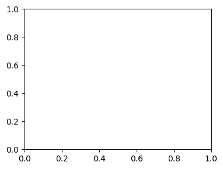
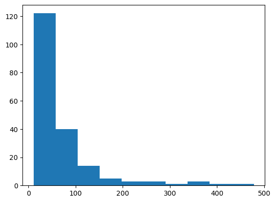
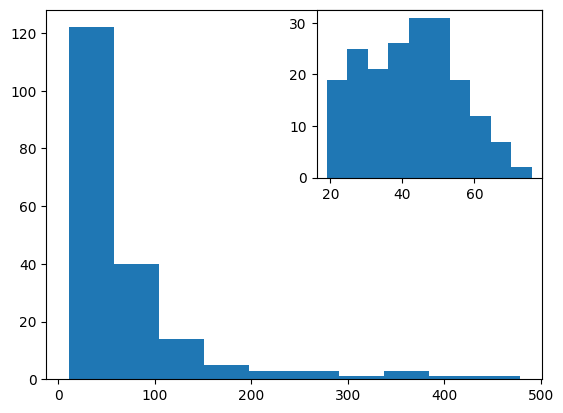
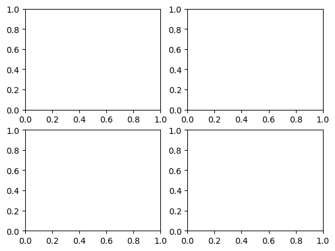
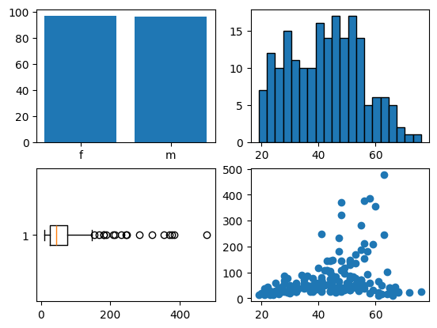
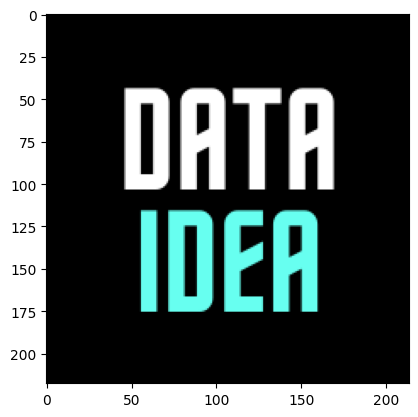

import matplotlib.pyplot as plt
import pandas as pd
from dataidea.datasets import loadDatasetMatplotlib
# Load the Titanic dataset
demo_df = loadDataset('../assets/demo_cleaned.csv', inbuilt=False, file_type='csv')Create a plot
fig = plt.figure()
# All plotting is done with respect to an Axes.
fig.add_axes([0.1, 0.1, 0.5, 0.5])
In most cases, a subplot will fit your needs. A subplot is an axes on a grid system.
fig1, ax = plt.subplots()
ax.hist(demo_df.income)
plt.show()
fig2, ax = plt.subplots()
ax.hist(demo_df.income)
# plt.grid(True)
ax2 = fig2.add_subplot(222) # row-col-num
ax2.hist(demo_df['age'])
plt.show()
fig3, axes = plt.subplots(nrows=2,ncols=2)
fig4, axes = plt.subplots(nrows=2,ncols=2)
# add bar graph
gender_counts = demo_df.gender.value_counts()
axes[0,0].bar(gender_counts.index, gender_counts.values)
# add histogram
axes[0,1].hist(demo_df.age, bins=20, edgecolor='black')
# add box plot
axes[1, 0].boxplot(demo_df.income, vert=0)
# add scatter plot
axes[1, 1].scatter(demo_df.age, demo_df.income)
plt.show()
2D Data or Images
from PIL import Image
image = Image.open('../assets/dataidea-logo.png')
fig4, ax = plt.subplots()
ax.imshow(image)
plt.show()
Save Figure
fig4, axes = plt.subplots(nrows=2,ncols=2)
# add bar graph
gender_counts = demo_df.gender.value_counts()
axes[0,0].bar(gender_counts.index, gender_counts.values)
# add histogram
axes[0,1].hist(demo_df.age, bins=20, edgecolor='black')
# add box plot
axes[1, 0].boxplot(demo_df.income, vert=0)
# add scatter plot
axes[1, 1].scatter(demo_df.age, demo_df.income)
plt.savefig('figure.pdf')
plt.show()
<Figure size 640x480 with 0 Axes>